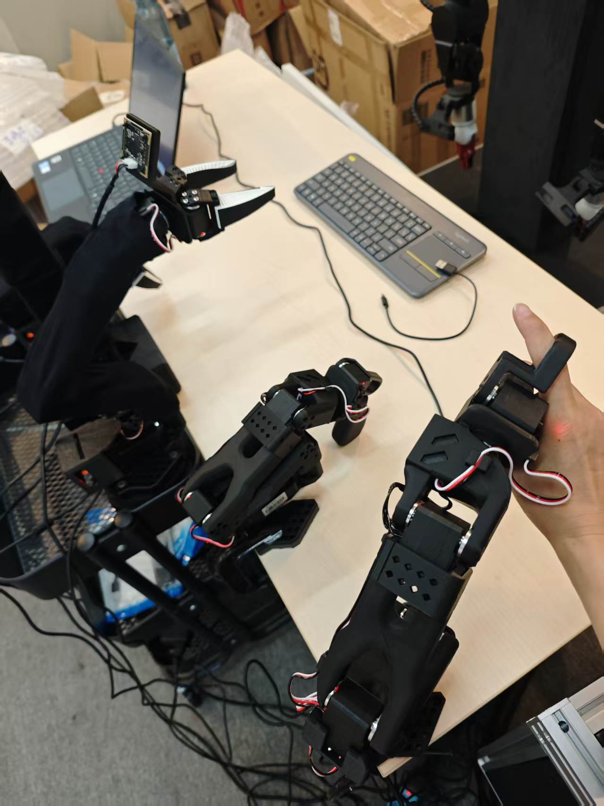
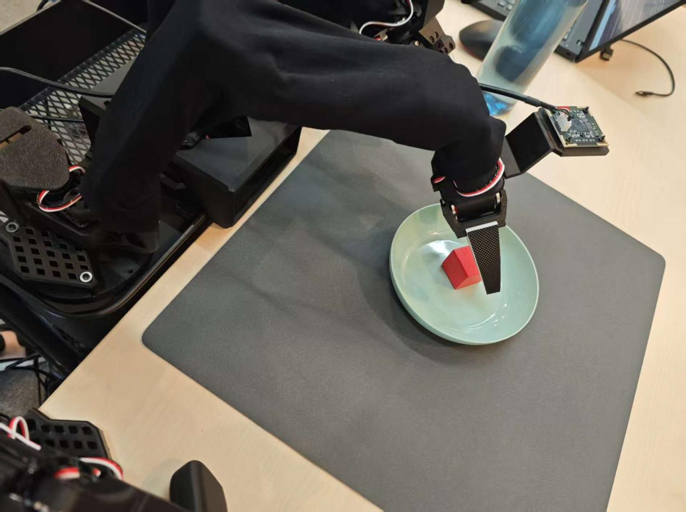

遥操作与数据采集
让人类操作员"穿"进机器人身体：主机遥操纵主臂、从臂模仿复现，再把每一次示教录成 LeRobot 数据集——这是端到端学习（ACT / VLA）全部智能的源头。
00课程节奏：五星学习法 · 8 段微课（每段 ≤ 15 min）
本实验按五星学习法组织：先用一个真实故障聚焦问题，再激活旧知（串口权限、校准文件、视频编码），接着示证新知（主从臂 + 三摄像头 + 人在环数据流），然后动手应用新知完成单臂/双臂遥操作与数据采集，最后借排障与拓展融会贯通。全程切成 8 段微课、每段不超过 15 分钟，段间停顿 1~2 分钟消化；纯讲授合计约 100 分钟，其余课时用于动手实操与个别辅导。
| 课段 | 五星阶段 | 时长 | 对应章节 | 本段任务 |
|---|---|---|---|---|
| 课段 1 | 聚焦问题 | 12 min | §01 + §02 前半 | 抛出"录了半天数据集是空的/从臂不动"故障，明确本课要解决的目标 |
| 课段 2 | 激活旧知 | 8 min | §02 后半 | 用串口权限、校准文件、视频编码三条旧知解释故障成因 |
| 课段 3 | 示证新知 | 15 min | §03 | 对照实物认识主从臂、三摄像头、校准文件与章节对应表 |
| 课段 4 | 示证新知 | 12 min | §06（回看 §02 流程） | 看懂"主从控制→多模态感知→数据落盘"人在环数据流 |
| 课段 5 | 应用新知 | 15 min | §04 前半 + §5 命令① + 视频 1 | 授权串口、单臂遥操作 60 Hz 跟随（边看视频边动手） |
| 课段 6 | 应用新知 | 15 min | §04 后半 + §5 命令②③④⑤ + 视频 2 | 复制 4 份校准、双臂遥操作、单臂/双臂数据采集循环 |
| 课段 7 | 应用新知 | 10 min | §07 | 采集参数估算器自测，算清"录多久、占多大" |
| 课段 8 | 融会贯通 | 13 min | §08~§10 | 排障口诀收口，脚本化拓展与思考题拔高迁移 |
讲课提示：课段 1/2 以讲授 + 提问为主；课段 3~4 用实物 + 动画；课段 5~6 边看视频边动手；课段 7 学员独立完成；课段 8 答疑拔高。段间停顿 1~2 分钟。
01实验目标课段 1 · 聚焦问题 · 12 min
完成单臂遥操作：授权串口后用 lerobot-teleoperate 让 SO101 从臂实时跟随主臂，观察 60 Hz 控制闭环与关节位置回显。
完成双臂遥操作：先复制四份校准文件再以 bi_so100_follower / bi_so100_leader 启动，实现 12 关节同步主从控制。
完成单臂 / 双臂数据采集：用 lerobot-record 录制规范 episode，理解"录制→复位→编码入库"的循环节奏。
本地缓存中出现可读的 LeRobot 数据集（含 task 文本、状态序列与视频），且 episode 数量达标（ACT 建议最少 50 组）。
四条目标对应四段验收证据：连接日志（SO101 connected）、12 关节回显表、录制循环日志（Recording → Reset → Map 100%）、以及缓存目录中可打开的 parquet + 视频——每条都要截图进实验报告。
02核心原理：人在环数据流课段 1 收尾 + 课段 2 · 激活旧知 · 8 min
把机器人想成一双刚学会拿筷子的手：它还不知道"怎么抓"，但人类操作员知道。遥操作就是给人的手上绑一根"提线"——你动主臂（leader），从臂（follower）像镜子一样跟着动，把"抓-拿-放"的完整手艺原样录下来。
整条数据流分三段：①主从控制——主臂编码器读出 6 个关节角度，经串口发给从臂执行，循环速率约 60 Hz（日志显示 time: 16.72ms (60 Hz)）；②多模态感知——左右手腕摄像头 + 头部摄像头把 640×480 / 30 fps 画面同时写入；③数据落盘——每一帧的机器人状态、动作、任务文本与视频被打包成一个 episode，任务结束后的复位期（reset）不算入有效片段。
存储路径在 ~/.cache/huggingface/lerobot/<学生名>/<数据集名>/。录制暂停时视频还要经过 SVT-AV1 编码（日志出现 Map: 100%|…| 479/479 与 SVT-AV1 Encoder Lib v3.0.0），此时机械臂不要动，等 Recording episode 1 出现再开始下一条。
为什么强调两套频率：关节指令跑 60 Hz 是为了跟手不滞后，图像停在 30 fps 是为了给编码和落盘留带宽——两者由同一个 episode 时间戳对齐，任何一路掉帧都会让"这一帧该出哪只手"的对应关系错位。
sudo chmod 666 /dev/arm* 才能打开；② 校准文件按 robot id 命名存放，双臂要复制成 bimanual 左/右四份；③ 视频用 SVT-AV1 编码落盘，Map: 100% 期间不能碰机械臂。三条合起来，正好解释课段 1 那两个故障。
03环境与材料课段 3 · 示证新知 · 15 min
- ✓硬件：LZ-XL01 平台（SO101/SO100 主从机械臂）+ 3 台 USB 摄像头（
/dev/cam_left、/dev/cam_right、/dev/cam_head） - ✓前置任务：已完成"机械臂串口"识别与"主从臂校准"（校准文件保存在
~/.cache/huggingface/lerobot/calibration/） - ✓软件：LeRobot 0.4.1，
conda activate lerobot环境 - ✓串口设备：
/dev/arm_slave_left|right（从臂）、/dev/arm_master_left|right（主臂） - ✓参考资料：指导文件第 06～09 章 + 本页两段指导视频
- ✓数据集口径：两条任务链路分别用
liming/put_cube_plate与test/bimanual_pick_place（§5 命令原文），分别对应本课单臂、双臂两条实验线
章节与资源的对应关系，边学边对号：
| 指导章节 | 核心动作 | 本页资源 |
|---|---|---|
| 第 06 章《单臂遥操作》 | 串口授权、单臂主从连接与 60 Hz 跟随 | 视频 1 · 图 2-1 · §5 命令① |
| 第 07 章《双臂遥操作》 | 复用 4 份校准文件、bimanual 启动与 12 关节回显 | 视频 2 · 图 4-1 · §5 命令②③ |
| 第 08 章《单臂数据采集》 | lerobot-record 录制循环（5 组示教） | 图 5-1 · §5 命令④ |
| 第 09 章《双臂数据采集》 | 三摄像头 + 12 关节的双臂 episode 录制 | §5 命令⑤ · §7 估算器 |
Headless environment detected 属于正常；这是 pynput 键盘监听的显示环境警告，不影响采集。操作熟练线（自检用）：不看笔记 5 分钟内完成"授权串口 → 单臂跟随 → Ctrl+C 干净退出"一轮，并能指出 4 份校准文件各自的存放路径。
04实操步骤（含指导视频）课段 5~6 · 应用新知 · 2×15 min
sudo chmod 666 /dev/arm*，然后跑单臂遥操作命令（见 §5），确认打印 SO101Leader connected / SO101Follower connected。Put red cube into plate（5 组），双臂任务 Lift the dish lid, put in the red block, and cover the lid.（3 组），录制循环见 §5 命令。观看两段视频时各抓一个细节：视频 1 看操作员如何用回车确认校准、视频 2 看双臂 12 关节回显表的左右对称结构——这两处正是 §8 排错表的高频出错点。

display_data=true 表中实时刷新（第 07 章）05关键命令随课段 5 / 6 对照使用
所有命令均取自 LZ-XL01 指导文件原文，可直接粘贴到 lerobot 终端。
# ── 单臂遥操作（第 06 章） conda activate lerobot sudo chmod 666 /dev/arm* lerobot-teleoperate \ --robot.type=so101_follower --robot.port=/dev/arm_slave_left \ --robot.id=left_follower_arm \ --teleop.type=so101_leader --teleop.port=/dev/arm_master_left \ --teleop.id=left_leader_arm # ── 双臂前置：复制 4 份校准文件（第 07 章，必须先执行） mkdir -p ~/.cache/huggingface/lerobot/calibration/robots/so100_follower/ mkdir -p ~/.cache/huggingface/lerobot/calibration/teleoperators/so100_leader/ cp ~/.cache/huggingface/lerobot/calibration/robots/so101_follower/left_follower_arm.json \ ~/.cache/huggingface/lerobot/calibration/robots/so100_follower/bimanual_follower_left.json （right 从臂、左/右主臂 4 个文件同理，共 4 条 cp） # ── 双臂遥操作（第 07 章） lerobot-teleoperate \ --robot.type=bi_so100_follower \ --robot.left_arm_port=/dev/arm_slave_left \ --robot.right_arm_port=/dev/arm_slave_right \ --robot.id=bimanual_follower \ --teleop.type=bi_so100_leader \ --teleop.left_arm_port=/dev/arm_master_left \ --teleop.right_arm_port=/dev/arm_master_right \ --teleop.id=bimanual_leader --display_data=true # ── 单臂数据采集（第 08 章） rm -rf /home/lz-xl01/.cache/huggingface/lerobot/liming/put_cube_plate lerobot-record \ --robot.type=so101_follower --robot.port=/dev/arm_slave_left \ --robot.id=left_follower_arm \ --robot.cameras="{left: {index: 0, fps: 30, width: 640, height: 480, video_backend: av}, \ side: {index: 2, fps: 30, width: 640, height: 480, video_backend: av}}" \ --teleop.type=so101_leader --teleop.port=/dev/arm_master_left \ --teleop.id=left_leader_arm --display_data=true \ --dataset.repo_id=liming/put_cube_plate --dataset.num_episodes=5 \ --dataset.single_task="Put red cube into plate" --dataset.push_to_hub=false \ --dataset.episode_time_s=16 --dataset.reset_time_s=6 # ── 双臂数据采集（第 09 章，三摄像头 + 12 关节） lerobot-record \ --robot.type=bi_so100_follower \ --robot.left_arm_port=/dev/arm_slave_left \ --robot.right_arm_port=/dev/arm_slave_right \ --robot.id=bimanual_follower \ --teleop.type=bi_so100_leader \ --teleop.left_arm_port=/dev/arm_master_left \ --teleop.right_arm_port=/dev/arm_master_right \ --teleop.id=bimanual_leader \ --robot.cameras="{left: {index: 0, ...}, \ right: {index: 3, ...}, side: {index: 5, ...}}" \ --dataset.repo_id=test/bimanual_pick_place --dataset.num_episodes=3 \ --dataset.single_task="Lift the dish lid, put in the red block, and cover the lid." \ --dataset.episode_time_s=16 --dataset.reset_time_s=6 \ --dataset.push_to_hub=false --display_data=true
Map: 100%…）不要碰机械臂。摄像头 index 说明：单臂链路用 left: 0 与 side: 2 两路，双臂链路用 left: 0 / right: 3 / side: 5 三路——顺序并非连续编号，是指导文档实测可用的插口位置，换机器后先逐个试出可用 index 再写进命令。


图 5-1｜单臂数据采集实物照：Put red cube into plate 任务的初始摆位与执行瞬间（第 08 章）
对照图 5-1 记录初始摆位：方块与盘子的相对位置、桌面反光、摄像头角度三项要在所有 episode 中保持一致——摆位漂移是 EXP-02 loss 忽高忽低的常见隐形原因。
06动画演示：人在环数据流课段 4 · 示证新知 · 12 min
注意虚线回路：采集是"一条做完、复位、再做下一条"的循环，复位期保证每条 episode 从相同初始状态出发——这直接决定 EXP-02 训练时数据分布是否干净。
看动画时对照两条实线：紫色实线是串口指令流（人 → 从臂，60 Hz），绿色实线是视觉流（摄像头 → 数据集，30 fps）——两条流在同一时间轴上对齐落盘，才构成"图像 + 状态 + 动作"三元组。
07互动练习：采集参数估算器课段 7 · 应用新知 · 10 min
提示：ACT 官方建议 至少 50 组 episode；三摄像头 × 640×480×30fps 的视频每小时粗估 1.5～2 GB（编码后）。
估算器的意义：把"录多久"换算成"坐多久"——按示例参数 50 组约 19 分钟纯任务时长，加上摆位与重录冗余，按半小时备课；若要 300 组消融数据（§9 ⑤），需按 2 小时以上排期。
08常见问题课段 8 · 融会贯通 · 13 min
- ✓串口打不开：先
sudo chmod 666 /dev/arm*；设备号变了就ls /dev/arm*重查。 - ✓双臂一动不动：多半没复制 4 份校准文件，或启动后没按回车；启动提示 Mismatch 时按 ENTER 使用已有校准文件。
- ✓显示 Mismatch between calibration values…：直接 ENTER（沿用 id 对应文件）；只有想重刷电机才输入
c。 - ✓退出时报 gRPC ERROR / winit DISPLAY / FATAL: exception not rethrown：清理期的正常噪音，确认已打印 Exiting 即可。
- ✓数据集是空的：检查
dataset.repo_id命名、是否录入超过 episode_time_s 的时长，以及缓存目录~/.cache/huggingface/lerobot/<名>/<集>/。 - ✓摄像头 index 被占用：画面黑屏或启动报无法打开设备时，用
ls /dev/video*核对，并关掉其他占用该 index 的预览程序（含上次未退净的采集终端）。 - ✓主从臂对调（动左出右）：校准文件复制或串口号弄混，核对
/dev/arm_slave_left|right与/dev/arm_master_left|right不要交叉。
围绕启动、运行、收尾三个时段，把高频报错压成一张"望闻问切"表：
| 症状段（启动 / 运行 / 收尾） | 先查什么 | 一行处置 |
|---|---|---|
| 启动：设备不存在 | ls /dev/arm* /dev/cam_* | udev 规则未生效就重新插拔并 chmod 666 |
| 启动：连接后立刻断开 | 主从臂供电与共地 | 检查电源适配器与 USB Hub 是否独立供电 |
| 运行：从臂抖动 / 跟随滞后 | 校准文件是否张冠李戴 | 左臂文件绝不能 cp 给右臂，按 id 对号入座 |
| 运行：摄像头黑屏 | index 是否被占用 | 关掉占用 index 的预览程序，核对 left/side 编号 |
| 收尾：数据集缺视频 | 编码是否被强制中断 | 等 Map 100% 编完再退出，重新录制最后一条 |
| 运行：主从方向对调 | 左右串口是否交叉 | slave_left↔master_left 对号，重新插拔后重查设备号 |
09拓展阅读课段 8 · 融会贯通
lerobot-0.4.1/command/ 中的 4_record_left_arm.sh 展示了量产式采集的参数组织：脚本化 repo_id、num_episodes、single_task，适合规模化采数；② calibration/ 目录结构（robots / teleoperators 分层）解释了为什么换机器要重拷校准文件；③ 真实工程里采集后要用 dataset-browser / parquet 抽查动作是否抖动，坏 episode 及时删除。video_backend=av（PyAV）负责把原始帧实时编码进数据集，换 backend 会改变落盘格式与 CPU 占用——采集机 CPU 吃紧时优先排查这里；⑤ 同一任务采到 300 组以上时，建议按"操作员 / 时段 / 摆位"分桶打 repo_id 前缀，方便 EXP-02 做数据消融；⑥ 熟练后可对照 dataset.features 输出，把双臂 12 关节 + 3 图像 + 任务文本的张量形状抄进实验报告，为 EXP-02 的输入层讲解做铺垫。record_single.sh / record_bimanual.sh 两个脚本（照抄 command/ 目录风格），下个班开课直接换 repo_id 复用——采集脚本化是走向量产采数的第一步。10思考题课段 8 · 融会贯通
reset_time_s（复位期）必须存在？如果任务中途失败、把失败动作也录进了 episode，会给 EXP-02 的训练带来什么后果？答题提示：先在纸上画出两种摄像头的视野范围（手腕随关节转动、头顶固定俯视），再对照 §6 动画里"图像流"的落盘顺序作答；两题都要引用本页日志或截图里的具体证据。